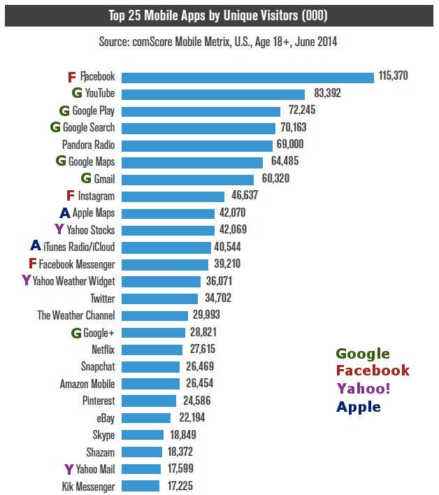
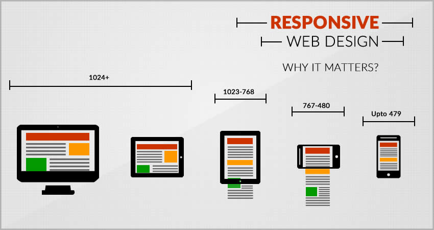

Het afgewezen voorstel
1991

De vierde jaarlijkse conferentie over hypertekst vond plaats in december 1991 in San Antonio, Texas.
Het World Wide Web-project van Tim Berners-Lee begon toen vorm te krijgen.
Omdat de organisatoren van de conferentie en de deelnemers het project waardeerde, diende hij een voorstel in bij Hypertext '91.
Het voorstel werd uiteindelijk afgewezen.
Creating Killer Websites
1996
In 1996 publiceerde David Siegel een boek getiteld Creating Killer Websites. Hierin schetste hij een reeks ingenieuze technieken om opvallende ontwerpen uit de grondstof van HTML te halen.
Eén techniek omvatte het gebruik van een transparante GIF, slechts één pixel voor één pixel groot.
Een andere techniek gebruikte het TABLE-element. Dit element was, samen met zijn kinderen TR en TD, bedoeld om tabelgegevens te beschrijven.
Dit waren slimme oplossingen voor lastige problemen. Maar ze hadden ongelukkige consequenties. Ontwerpers behandelden HTML als een kleine hulpmiddel voor het vertonen van inhoud.
A Dao of Web Design
2000
In het jaar 2000 publiceerde het online magazine "A List Apart" een artikel getiteld "A Dao of Web Design".
In het artikel wijst John Allsopp erop dat nieuwe media vaak beginnen door de bril van een vorig medium aan te nemen.
Ajax
2005

De opkomst van JavaScript kreeg een boost in 2005 door de publicatie van het artikel "Ajax: A New Approach to Web Applications"
door Jesse James Garrett. Het artikel gaf een naam aan een techniek die populariteit won. Met behulp van JavaScript was het voor een webbrowser
mogelijk om gegevens van een webserver te verzenden en te ontvangen zonder de hele pagina te verversen. Het resultaat was een soepelere gebruikerservaring.
Ethan Marcotte op het podium
2010
In april 2010 stond Ethan Marcotte op het podium bij "An Event Apart in Seattle", een bijeenkomst voor mensen die websites maken.
Hij sprak over een wereld van de architectuur: responsief ontwerp, het idee dat gebouwen kunnen veranderen en aanpassen aan de behoeften van de mensen die het gebouw gebruiken.
Het beslissende moment
2011
In september 2011 sprak Jeremy Keith op een conferentie in Tennessee samen met een aantal mensen. Ze waren informatie aan het verzamelen van elkaar om te achterhalen waar het web heen ging. De verspreiding van mobiele apparaten had alles veranderd. Tabletten waren in opkomst. De hoeveelheid en diversiteit van aangesloten apparaten, waarvan ze nog niet allemaal hebben kunnen voorstellen zal toenemen. Dat was geen reden tot wanhoop.
Omdat ze realiseerden dat het onmogelijk was om toekomstbestendig te zijn, besloten ze in plaats daarvan toekomstvriendelijk te zijn.
Mobiele populariteit
2014

Volgens comScore heeft het aantal wereldwijde gebruikers van mobiele apparaten het gebruik van desktopcomputers in 2014 al overschaduwd.
Mobiele gebruikers namen toe. Bedrijven vinden het steeds belangrijker om succesvol te zijn in de nieuwe mobiele dominate wereld.
Daarom moeten websites worden geoptimaliseerd voor alle apparaten. Responsive websites hebben één URL en één set code,
er hoeft dus niet steeds websites worden ontwerpen. De website zal zichzelf automatisch aanpassen
op het scherm van het apparaat dat wordt gebruikt. Met responsive design krijgt iedereen het juiste ontwerp te zien
voor elk apparaat. Daarnaast bespaart het ook een hoop geld.
Responsive Design
2018

Hoewel responsive design gegroeit is, zijn er nog steeds een aantal problemen. Enkele van de problemen zijn: het belang van advertentieplaatsing en elementen op een pagina. Door de verschillende elementen is het vaak niet mogelijk om het unique ontwerp te behouden
van bepaalde websites. Het is daarom belangrijk om de relatie tussen webontwerp en technologie in het oog te houden. Het is een dynamische relatie in constante stroom. Responsive web design is meer dan een technische set aan regels.
Het is een flexibele benadering van het denken over design in het huidige moment en de niet al te verre toekomst.